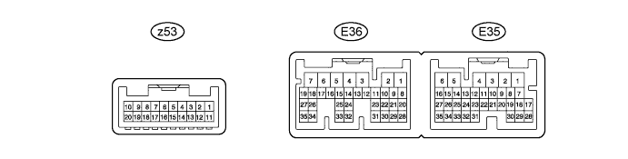
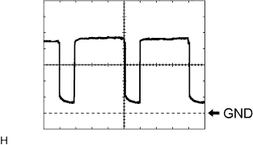
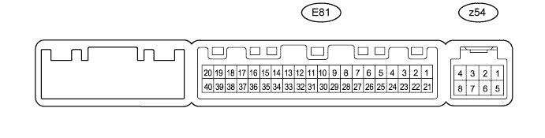

AIR CONDITIONING SYSTEM > TERMINALS OF ECU |
| CHECK AIR CONDITIONING AMPLIFIER (w/ Rear Heater) |

Disconnect the E36, E35 and z53 air conditioning amplifier assembly connectors.
Measure the voltage and resistance according to the value(s) in the table below.
| Terminal No. (Symbol) | Wiring Color | Terminal Description | Condition | Specified Condition |
| E36-6 (+B1) - E36-1 (GND) | R - W-B | Battery power source | Always | 11 to 14 V |
| E36-7 (+B2) - E36-1 (GND) | R - W-B | Battery power source | Always | 11 to 14 V |
| z53-3 (B BUS) - z53-1 (BUS G) | - | Power supply for BUS IC (for front) | Always | 11 to 14 V |
| z53-10 (B BUS) - z53-8 (BUS G) | - | Power supply for BUS IC (for front) | Always | 11 to 14 V |
| E36-5 (IG+) - E36-1 (GND) | G - W-B | Ignition power supply | Engine switch on (IG) | 11 to 14 V |
| Engine switch off | Below 1 V | |||
| E36-14 (RBBU) - E36-12 (RBUG) | L - BR | Power supply for BUS IC (for rear) | Always | 11 to 14 V |
| E35-25 (TR3) - Body ground | V - Body ground | Ground | Engine switch on (IG) Driver side duct sensor temperature: 25°C (77°F) | 5000 +/-150 Ω |
| E35-26 (TR4) - Body ground | W - Body ground | Ground | Engine switch on (IG) Passenger side duct sensor temperature: 25°C (77°F) | 5000 +/-150 Ω |
| E35-16 (SG-2) - Body ground | G - Body ground | Ground for pressure sensor | Always | Below 1 Ω |
| E35-29 (SG-5) - Body ground | G - Body ground | Ground for compressor signal | Always | Below 1 Ω |
| E36-2 (E1) - Body ground | W-B - Body ground | Ground | Always | Below 1 Ω |
| E36-1 (GND) - Body ground | W-B - Body ground | Ground | Always | Below 1 Ω |
| E35-6 (E2) - Body ground | W-B - Body ground | Ground | Always | Below 1 Ω |
| E35-32 (SG-1) - Body ground | B - Body ground | Ground for room temperature sensor (for front) | Always | Below 1 Ω |
| z53-6 (SGA) - Body ground | - | Ground for evaporator temperature sensor | Always | Below 1 Ω |
| z53-1 (BUS G) - Body ground | - | Ground for BUS IC (for front) | Always | Below 1 Ω |
| z53-8 (BUS G) - Body ground | - | Ground for BUS IC (for front) | Always | Below 1 Ω |
| E35-34 (SGND) - Body ground | BR - Body ground | Ground for duct sensor (for driver side) | Always | Below 1 Ω |
| E35-12 (SG-9) - Body ground | L - Body ground | Ground for duct sensor (for passenger side) | Always | Below 1 Ω |
| E35-2 (SG-6) - Body ground | G - Body ground | Ground for room temperature sensor signal (for Rear LH and Rear RH) | Always | Below 1 Ω |
| E36-12 (RBUG) - Body ground | BR - Body ground | Ground for BUS IC (for rear) | Always | Below 1 Ω |
| E35-1 (SG) - Body ground | P - Body ground | Ground for evaporator temperature sensor signal (for Rear) | Always | Below 1 Ω |
Reconnect the E36, E35 and z53 air conditioning amplifier assembly connectors.
Measure the voltage and waveform according to the value(s) in the table below.
| Terminal No. (Symbol) | Wiring Color | Terminal Description | Condition | Specified Condition |
| E36-25 (CFN+) - Body ground | R - Body ground | Condenser FAN operation signal | Engine switch on (IG) | 11 to 14 V |
| E36-33 (COOL) - Body ground | W - Body ground | Cool box operation signal | Engine switch on (IG) Cool box switch: ON | 11 to 14 V |
| E36-29 (AC1) - Body ground | L - Body ground | Compressor operation signal | Engine switch on (IG) A/C switch: OFF | 11 to 14 V |
| Engine switch on (IG) A/C switch: ON | Below 1 V | |||
| E36-22 (ACT) - Body ground | G - Body ground | Compressor operation signal | Engine switch on (IG) A/C switch: OFF | Below 1 V |
| Engine switch on (IG) A/C switch: ON | 11 to 14 V | |||
| E35-28 (LOCK) - E35-29 (SG-5) | L - G | Air compressor lock sensor signal | Engine idling A/C switch: ON Blower switch LO | Pulse generation (see waveform 1) |
| E35-10 (TAM) - E35-16 (SG-2) | V - G | Ambient temperature sensor signal | Engine switch on (IG) Ambient temperature: 25°C (77°F) | 1.6 to 1.8 V |
| Engine switch on (IG) Ambient temperature: 50°C (122°F) | 0.5 to 0.7 V | |||
| E35-27 (S5-1) - E35-16 (SG-2) | LG - G | Power supply for pressure sensor | Engine switch on (IG) | 4.5 to 5.5 V |
| E35-20 (PRE) - E35-16 (SG-2) | R - G | Air conditioning pressure sensor signal | Refrigerant pressure: Normal | 1.0 to 4.8 V |
| Refrigerant pressure: Abnormal (less than 0.392 MPa [4.0 kgf/cm2, 57 psi]) | Below 1 V | |||
| Refrigerant pressure: Abnormal (less than 3.187 MPa [32.5 kgf/cm2, 463 psi]) | 4.8 V or higher | |||
| E36-18 (MGC) - E36-1 (GND) | R - W-B | A/C compressor magnetic clutch operation signal | Engine idling Blower switch LO A/C switch: ON | Below 1 V |
| E36-3 (BLW) - E36-1 (GND) | R - W-B | Blower motor control signal | Engine switch on (IG) Blower switch LO | Pulse generation (see waveform 2) |
| E35-9 (TR) - E35-32 (SG-1) | W - B | Room temperature sensor signal (for front) | Engine switch on (IG) Front side interior temperature: 25°C (77°F) | 1.6 to 1.8 V |
| Room temperature sensor signal (for front) | Engine switch on (IG) Front side interior temperature: 50°C (122°F) | 0.5 to 0.7 V | ||
| E35-7 (TSD) - Body ground | LG - Body ground | Driver side solar sensor signal | Engine switch on (IG) Solar sensor subjected to electric light | 0.8 to 4.3 V |
| E35-8 (TSP) - Body ground | GR - Body ground | Passenger side solar sensor signal | Engine switch on (IG) Solar sensor subjected to electric light | 0.8 to 4.3 V |
| z53-7 (TEA) - z53-6 (SGA) | - | Evaporator temperature sensor signal | Engine switch on (IG) Evaporator temperature: 15°C (59°F) | 1.4 to 1.8 V |
| z53-2 (BUS) - z53-1 (BUS G) | - | BUS IC control signal (for front) | Engine switch on (IG) | Pulse generation |
| z53-9 (BUS) - z53-8 (BUS G) | - | BUS IC control signal (for front) | Engine switch on (IG) | Pulse generation |
| E35-18 (TR) - E35-2 (SG-6) | R - G | Room temperature sensor signal (for Rear LH) | Engine switch on (IG) Vehicle interior temperature: 25°C (77°F) | 1.6 to 1.8 V |
| Engine switch on (IG) Vehicle interior temperature: 50°C (122°F) | 0.5 to 0.7 V | |||
| E35-19 (TR7) - E35-2 (SG-6) | R - G | Room temperature sensor signal (for Rear RH) | Engine switch on (IG) Vehicle interior temperature: 25°C (77°F) | 1.6 to 1.8 V |
| Engine switch on (IG) Vehicle interior temperature: 50°C (122°F) | 0.5 to 0.7 V | |||
| E36-13 (RBUS) - E36-12 (RBUG) | R - BR | BUS IC control signal (for rear) | Engine switch on (IG) | Pulse generation |
| E35-17 (TEC) - E35-1 (SG) | W - P | Evaporator temperature sensor signal (for Rear) | Engine switch on (IG) Evaporator temperature: 15°C (59°F) | 1.4 to 1.8 V |
| E36-31 (ALT) - Body ground | R - Body ground | Generator signal | Engine idling | Pulse generation |
| E36-32 (SW1) - Body ground | BR - Body ground | Idle up operation signal | Engine switch on (IG) Idle up switch OFF | Below 1 V |
| Engine switch on (IG) Idle up switch ON | 11 to 14 V | |||
| E36-20 (LIN1) - E36-1 (GND) | Y - W-B | LIN communication signal (for Front A/C switch) | Engine switch on (IG) | Pulse generation |
| E36-21 (RLIN) - E36-1 (GND) | L - W-B | LIN communication signal (for Rear A/C switch) | Engine switch on (IG) | Pulse generation |
| E36-27 (PTC1) - Body ground | R - Body ground | PTC1 heater relay operation signal | Engine idling Set temperature: MAX HOT Engine coolant temperature: Below 65°C (149°F) Ambient temperature: Below 10°C (50°F) Blower switch off → LO | Below 1 V → 11 to 14 V |
| E36-26 (PTC2) - Body ground | R - Body ground | PTC2 heater relay operation signal | ||
| E36-35 (PTC3) - Body ground | R - Body ground | PTC3 heater relay operation signal | ||
| E36-17 (BLWH) - E36-1 (GND) | L - W-B | Blower motor control signal (for rear) | Engine switch on (IG) Blower switch LO | Pulse generation (see waveform 3) |
| E36-19 (RMGV) - E36-1 (GND) | B - W-B | Rear cooling unit expansion valve signal | Engine switch on (IG) | 11 to 14 V |
 |
Using an oscilloscope, check waveform 1.
| Item | Content |
| Terminal No. (Symbol) | E35-28 (LOCK) - E35-29 (SG-5) |
| Tool Setting | 200 mV/DIV., 10 ms/DIV. |
| Condition | Engine running Blower switch LO A/C switch on |
 |
Using an oscilloscope, check waveform 2.
| Item | Content |
| Terminal No. (Symbol) | E36-3 (BLW) - E36-1 (GND) |
| Tool Setting | 1 V/DIV., 500 μs/DIV. |
| Condition | Engine switch on (IG) Blower switch LO |
Using an oscilloscope, check waveform 3.
| Item | Content |
| Terminal No. (Symbol) | E36-17 (BLWH) - E36-1 (GND) |
| Tool Setting | 1 V/DIV., 500 μs/DIV. |
| Condition | Engine switch on (IG) Blower switch LO |
| CHECK AIR CONDITIONING AMPLIFIER ASSEMBLY (w/o Rear Heater) |

Disconnect the E81 and z54 air conditioning amplifier assembly connectors.
Measure the resistance and voltage according to the value(s) in the table below.
| Terminal No. (Symbol) | Wiring Color | Terminal Description | Condition | Specified Condition |
| E81-21 (+B1) - E81-14 (GND) | R - W-B | Battery power source | Always | 11 to 14 V |
| z54-4 (B BUS) - z54-2 (BUS G) | - | Power supply for BUS IC (for front) | Always | 11 to 14 V |
| E81-1 (IG+) - E81-14 (GND) | G - W-B | Ignition power supply | Engine switch on (IG) | 11 to 14 V |
| Engine switch off | Below 1 V | |||
| E81-35 (SG-5) - Body ground | G - Body ground | Ground for compressor signal | Always | Below 1 Ω |
| E81-13 (SG-2) - Body ground | G - Body ground | Ground for pressure sensor | Always | Below 1 Ω |
| E81-14 (GND) - Body ground | W-B - Body ground | Ground | Always | Below 1 Ω |
| E81-34 (SG-1) - Body ground | B - Body ground | Ground for room temperature sensor (for front) | Always | Below 1 Ω |
| z54-5 (SGA) - Body ground | - | Ground for evaporator temperature sensor | Always | Below 1 Ω |
| z54-2 (BUS G) - Body ground | - | Ground for BUS IC (for front) | Always | Below 1 Ω |
Reconnect the E81 and z54 air conditioning amplifier assembly connectors.
Measure the voltage and waveform according to the value(s) in the table below.
| Terminal No. (Symbol) | Wiring Color | Terminal Description | Condition | Specified Condition |
| E81-8 (LOCK) - E81-35 (SG-5) | L - G | Air compressor lock sensor signal | Engine idling A/C switch: ON Blower switch LO | Pulse generation (see waveform 1) |
| E81-39 (CFN+) - Body ground | R - Body ground | Condenser FAN operation signal | Engine switch on (IG) A/C switch: OFF | Below 1 V |
| Engine switch on (IG) A/C switch: ON | 11 to 14 V | |||
| E81-15 (COOL) - Body ground | W - Body ground | Cool box operation signal | Engine switch on (IG) Cool box switch: OFF | Below 1 V |
| Engine switch on (IG) Cool box switch: ON | 11 to 14 V | |||
| E81-17 (AC1) - Body ground | L - Body ground | Compressor operation signal | Engine switch on (IG) A/C switch: OFF | Below 1 V |
| Engine switch on (IG) A/C switch: ON | 11 to 14 V | |||
| E81-27 (ACT) - Body ground | G - Body ground | Compressor operation signal | Engine switch on (IG) A/C switch: OFF | Below 1 V |
| Engine switch on (IG) A/C switch: ON | 11 to 14 V | |||
| E81-5 (TAM) - E81-13 (SG-2) | V - G | Ambient temperature sensor signal | Engine switch on (IG) Ambient temperature: 25°C (77°F) | 1.6 to 1.8 V |
| Engine switch on (IG) Ambient temperature: 50°C (122°F) | 0.5 to 0.7 V | |||
| E81-30 (S5-1) - E81-13 (SG-2) | LG - G | Power supply for pressure sensor | Engine switch on (IG) | 4.5 to 5.5 V |
| E81-9 (PRE) - E81-13 (SG-2) | R - G | Air conditioning pressure sensor signal | Refrigerant pressure: Normal | 1.0 to 4.8 V |
| Refrigerant pressure: Abnormal (less than 0.392 Mpa [4.0 kgf/cm2, 57 psi] | Below 1 V | |||
| Refrigerant pressure: Abnormal (less than 3.187 Mpa [32.5 kgf/cm2, 463 psi] | 4.8 V or higher | |||
| E81-20 (MGC) - E81-14 (GND) | R - W-B | A/C compressor magnetic clutch operation signal | Engine idling Blower switch LO A/C switch: ON | Below 1 V |
| E81-18 (RCRL) - E81-14 (GND) | B - Body ground | Rear cooler control relay operation signal | Engine switch on (IG) Rear blower switch OFF | Below 1 V |
| Engine switch on (IG) Rear blower switch ON | 11 to 14 V | |||
| E81-23 (BLW) - E81-14 (GND) | R - W-B | Blower motor control signal | Engine switch on (IG) Blower switch ON | Pulse generation (see waveform 2) |
| E81-29 (TR) - E81-34 (SG-1) | W - B | Room temperature sensor signal (for front) | Engine switch on (IG) Front side interior temperature: 25°C (77°F) | 1.6 to 1.8 V |
| Engine switch on (IG) Front side interior temperature: 50°C (122°F) | 0.5 to 0.7 V | |||
| E81-32 (TSP) - Body ground | GR - Body ground | Passenger side solar sensor signal | Engine switch on (IG) Solar sensor subjected to electric light | 0.8 to 4.3 V |
| E81-33 (TSD) - Body ground | LG - Body ground | Driver side solar sensor signal | Engine switch on (IG) Solar sensor subjected to electric light | 0.8 to 4.3 V |
| E81-36 (SW1) - Body ground | BR - Body ground | Idle up operation signal | Engine switch on (IG) Idle up switch OFF | Below 1 V |
| Engine switch on (IG) Idle up switch ON | 11 to 14 V | |||
| z54-6 (TEA) - z54-5 (SGA) | - | Evaporator temperature sensor signal | Engine switch on (IG) Evaporate temperature: 15°C (59°F) | 1.4 to 1.8 V |
| z54-3 (BUS) - z54-2 (BUS G) | - | BUS IC control signal (for front) | Engine switch on (IG) | Pulse generation |
| E81-37 (LIN1) - E81-14 (GND) | Y - W-B | LIN communication signal | Engine switch on (IG) | Pulse generation |
| E81-25 (ALT) - Body ground | R - Body ground | Generator signal | Engine idling | Pulse generation |
| E81-3 (PTC1) - Body ground | R - Body ground | PTC1 heater relay operation signal | Engine idling Set temperature: MAX HOT Engine coolant temperature: Below 65°C (149°F) Ambient temperature: Below 10°C (50°F) | Below 1 V → 11 to 14 V |
| E81-22 (PTC2) - Body ground | R - Body ground | PTC2 heater relay operation signal | ||
| E81-4 (PTC3) - Body ground | R - Body ground | PTC3 heater relay operation signal | ||
| E81-24 (MGCA) - E81-14 (GND) | Y - W-B | Viscous with magnetic clutch operation signal | Engine idling Idle up switch ON | Below 1 V |
|
Using an oscilloscope, check waveform 1.
| Item | Content |
| Terminal No. (Symbol) | E81-8 (LOCK) - E81-35 (SG-5) |
| Tool Setting | 200 mV/DIV., 10 ms/DIV. |
| Condition | Engine running Blower switch LO A/C switch on |
Using an oscilloscope, check waveform 2.
| Item | Content |
| Terminal No. (Symbol) | E81-23 (BLW) - E81-14 (GND) |
| Tool Setting | 1 V/DIV., 500 μs/DIV. |
| Condition | Engine switch on (IG) Blower switch LO |
| CHECK AIR CONDITIONING CONTROL ASSEMBLY (w/o Multi-display) |

Disconnect the F10 air conditioning control assembly connector.
Measure the resistance and voltage according to the value(s) in the table below.
| Terminal No. (Symbol) | Wiring Color | Terminal Description | Condition | Specified Condition |
| F10-7 (IG+) - F10-1 (GND) | G - W-B | Ignition power supply | Engine switch on (IG) | 11 to 14 V |
| Engine switch off | Below 1 V | |||
| F10-1 (GND) - Body ground | W-B - Body ground | Ground | Always | Below 1 Ω |
Reconnect the F10 air conditioning control assembly connector.
Measure the resistance and voltage according to the value(s) in the table below.
| Terminal No. (Symbol) | Wiring Color | Terminal Description | Condition | Specified Condition |
| F10-12 (DTP+) - F10-1 (GND) | R - W-B | Temperature up switch signal | Switch not pressed | Below 1 V |
| Switch pressed | Alternating between 3.5 V or higher and below 1 V | |||
| F10-10 (PTP+) - F10-1 (GND) | L - W-B | Temperature up switch signal | Switch not pressed | Below 1 V |
| Switch pressed | Alternating between 3.5 V or higher and below 1 V | |||
| F10-9 (S5) - F10-1 (GND) | B - W-B | Signal ground | Always | Below 1 Ω |
| F10-11 (DTP-) - F10-1 (GND) | G - W-B | Temperature down switch signal | Switch not pressed | Below 1 V |
| Switch pressed | Alternating between 3.5 V or higher and below 1 V | |||
| F10-3 (PTP-) - F10-1 (GND) | W - W-B | Temperature down switch signal | Switch not pressed | Below 1 V |
| Switch pressed | Alternating between 3.5 V or higher and below 1 V | |||
| F10-2 (SG) - F10-1 (GND) | GR - W-B | Signal ground | Always | Below 1 Ω |
| CHECK MULTI-DISPLAY (w/ Multi-display) |

Disconnect the F28 multi-display connector.
Measure the resistance and voltage according to the value(s) in the table below.
| Terminal No. (Symbol) | Wiring Color | Terminal Description | Condition | Specified Condition |
| F28-3 (IG) - F28-10 (GND1) | G - W-B | Ignition power supply | Engine switch on (IG) | 11 to 14 V |
| Engine switch off | Below 1 V | |||
| F28-1 (+B1) - F28-10 (GND1) | R - W-B | Battery power source | Always | 11 to 14 V |
| F28-10 (GND1) - Body ground | W-B - Body ground | Ground | Always | Below 1 Ω |
Reconnect the F28 multi-display connector.
Measure the resistance and voltage according to the value(s) in the table below.
| Terminal No. (Symbol) | Wiring Color | Terminal Description | Condition | Specified Condition |
| F31-2 (TEC+) - F28-10 (GND1) | R - W-B | Temperature up switch signal | Switch not pressed | Below 1 V |
| Switch pressed | Alternating between 3.5 V or higher and below 1 V | |||
| F31-3 (TES+) - F28-10 (GND1) | L - W-B | Temperature up switch signal | Switch not pressed | Below 1 V |
| Switch pressed | Alternating between 3.5 V or higher and below 1 V | |||
| F31-5 (AGND) - F28-10 (GND1) | B - N-B | Signal ground | Always | Below 1 Ω |
| F31-6 (TEC-) - F28-10 (GND1) | G - W-B | Temperature down switch signal | Switch not pressed | Below 1 V |
| Switch pressed | Alternating between 3.5 V or higher and below 1 V | |||
| F31-7 (TES-) - F28-10 (GND1) | W - W-B | Temperature down switch signal | Switch not pressed | Below 1 V |
| Switch pressed | Alternating between 3.5 V or higher and below 1 V | |||
| F31-8 (BGND) - F28-10 (GND1) | GR - W-B | Signal ground | Always | Below 1 Ω |
| CHECK NO. 2 AIR CONDITIONING CONTROL ASSEMBLY |
Disconnect the E55 switch connector.
Measure the resistance and voltage according to the value(s) in the table below.
| Terminal No. (Symbol) | Wiring Color | Terminal Description | Condition | Specified Condition |
| E55-6 (IG) - E55-1 (E) | G - W-B | Ignition power supply | Always | 11 to 14 V |
| E55-1 (E) - Body ground | W-B - Body ground | Ground | Always | Below 1 Ω |
| CHECK MAIN BODY ECU (COWL SIDE JUNCTION BLOCK LH) |

Disconnect the 2B, 2D, and E3 ECU connectors.
Measure the voltage and resistance according to the value(s) in the table below.
| Terminal No. (Symbol) | Wiring Color | Terminal Description | Condition | Specified Condition |
| 2B-20 (BATB) - Body ground | L - Body ground | Battery power supply | Always | 11 to 14 V |
| 2A-1 (ACC) - Body ground | GR - Body ground | ACC power supply | Engine switch on (ACC) | 11 to 14 V |
| 2A-1 (ACC) - Body ground | GR - Body ground | ACC power supply | Engine switch off | Below 1 V |
| 2D-62 (GND2) - Body ground | W-B - Body ground | Ground | Always | Below 1 Ω |